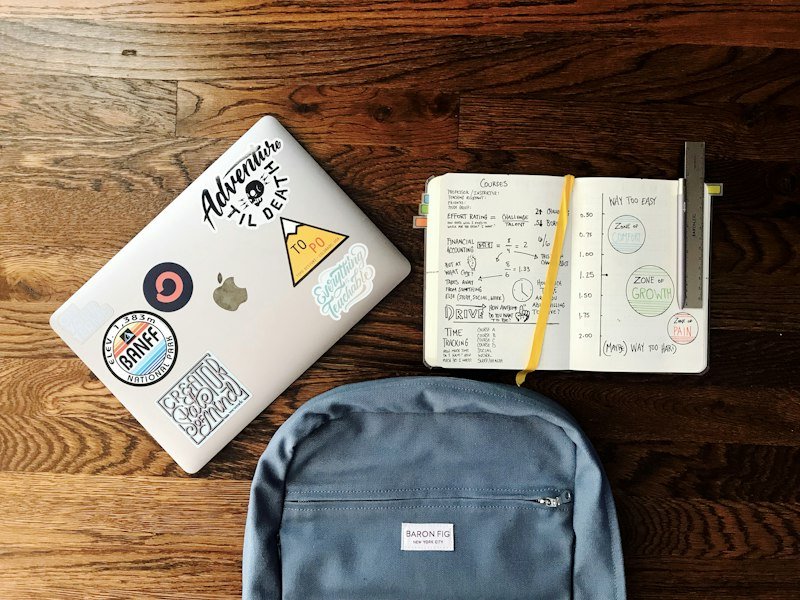
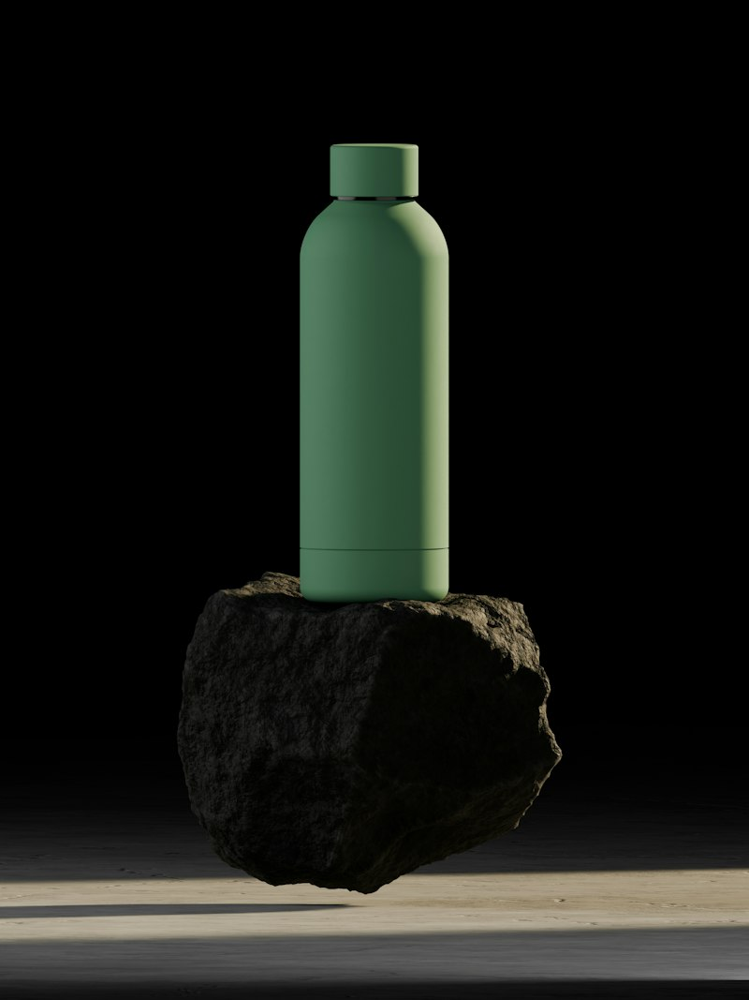
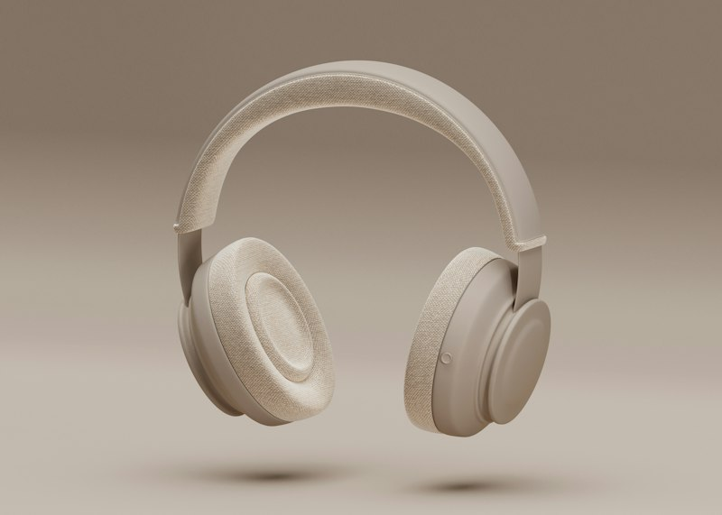
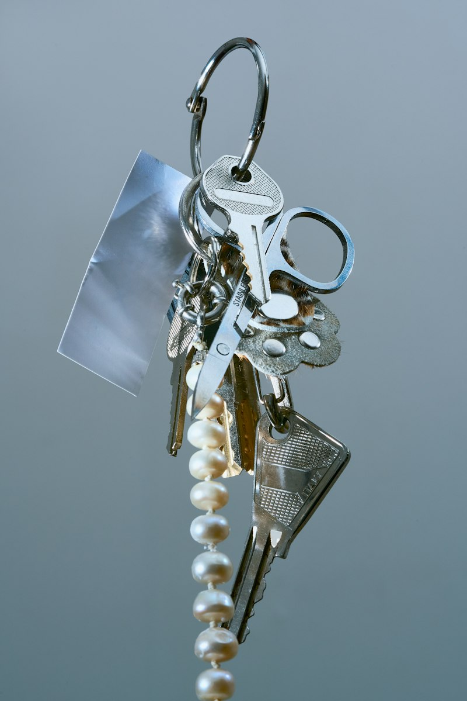
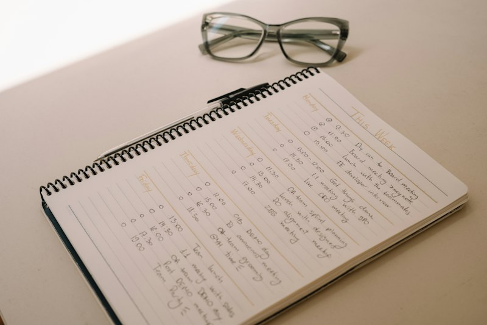

Mariana G. @mariana.g

Mochila negra
- Lugar: Biblioteca
- Fecha:
- Descripción: Compartimento frontal gris, llavero de estrella.
☆ Facultad de Ciencias · UNAM ☆
Bienvenido al portal
Comunidad universitaria
¿Perdiste algo en la facultad? ¿Encontraste un objeto sin dueño? Este es el punto de encuentro de la comunidad de Ciencias para reportar, buscar y devolver objetos perdidos.
Mariana G. @mariana.g

Diego R. @diego.rmz
Luisa P. @luisap

Emilio M. @emiliom

Sofía C. @sofiac

Andrés T. @andrest
